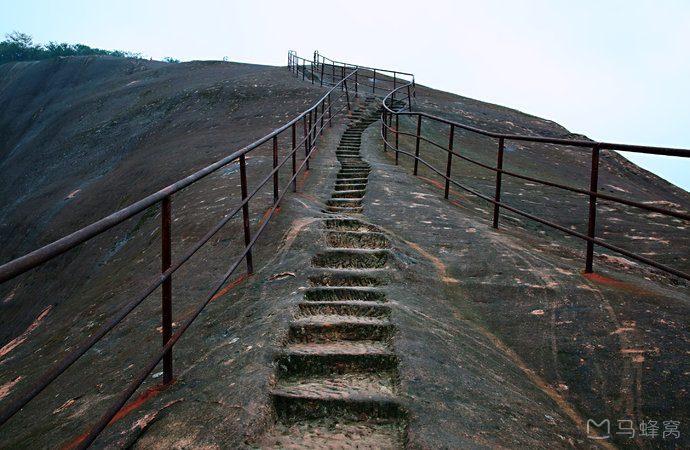
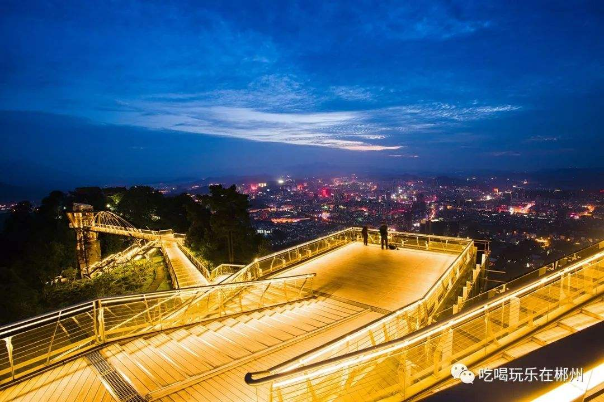
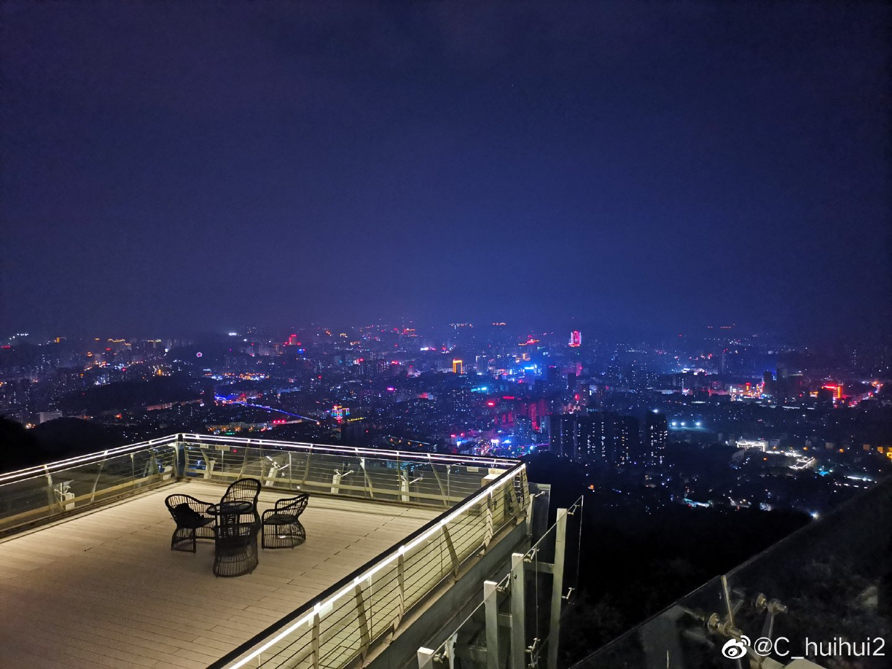

中文名称 郴州
外文名称 Chen zhou
别 名 福城、桂阳郡
行政区类别 地级市
所属地区 中国·中南地区·湖南省
下辖地区 2区、1县级市、8县
政府驻地 五岭广场东侧五岭大道9号
邮政区码 423000
地理位置 中国南部，湖南省东南部
面 积 19387平方千米
人 口 473.1万人（2017年常住人口）
方言 西南官话郴州话、湘南土话、客家语
气候条件 亚热带季风气候
著名景点 东江湖、苏仙岭、万华岩、莽山 、高椅岭
机 场 郴州机场（在建）
火车站 郴州站、郴州西站
车牌代码 湘L
特色美食 杀猪粉、坛子肉、黄糍粑 、栖风渡鱼粉、东江鱼、临武鸭、凉拌石耳等等等等，郴州还有很多美食就不一一列举了
名称由来 “郴”字独属郴州，最早见于秦朝，为篆体“郴”，由林、邑二字合成，意谓“林中之城”
“郴”字见之于史传，是汉代司马迁所写《史记》，其中记载（项羽）“乃使使徙义帝长沙郴县”。
矿产资源 郴州是全球有名的有色金属之乡，截止2017年末，已发现各类矿产112种，已探明储量的矿产46种。实施地质勘查项目 130个
实施资源危机矿山找矿项目11个
钨、铋储量全球分列第一和第二，钼储量全国第一，石墨储量全国第一，锡储量全国第三，锌储量全国第四。其它矿石品种也极其丰富。
截止2009年底
郴州开采的矿山有：煤矿292个，铁矿22个，铋矿1个，锰矿1个，铅锌矿78个，钨矿10个，锡矿10个，金矿2个，银矿1个，萤石16个，砷矿2个，石墨矿17个，砂、石、粘土522个。
民族文化
郴州是一个多民族地区，在全国56个民族中，郴州辖区内有27个民族，民俗资源丰富,有瑶族盘王节、伴嫁哭嫁歌、香火龙、元宵花灯及遍布农村各地的赶圩场等，
其中以汝城香火龙、嘉禾伴嫁歌、瑶族盘王节、宜章夜故事和安仁赶分社最具代表性。
已经被列入中国国家级非物质文化遗产保护名录的汝城香火龙，起源于庆贺丰收、祈福祛灾的图腾信仰，特定于每年春节的正月至元宵节期间夜晚隆重举行，至今已有一千三百多年的历史，集中表达了人民追求风调雨顺、国泰民安、祛邪消灾的美好愿望，蕴含了尊敬祖先，追求进步，遵礼崇教的文化底蕴，是一种独具特色的民间综合艺术活动。
嘉禾民歌是郴州嘉禾人民在长期的社会生活实践中创造出来的文化遗产，它集诗、歌、舞、剧于一的综合体，既是倾诉妇女情感的抒情长诗，又是反映妇女婚嫁习俗为主要内容的民俗歌舞剧。现已搜集整理的民歌、民谣2369首。精心打造的大型歌舞剧《伴嫁》以音诗画的舞台艺术形式，再现了湘南地区的农村婚嫁习俗，展现了郴州市民俗风情的独特魅力
风景名胜
稻田公园 稻田公园位于湖南省安仁县永乐江镇东南部，是中国目前唯一的集生态农业、科普教育、观光旅游、休闲娱乐于一体的“农业公园”。
由中科院院士——“杂交水稻之父”袁隆平先生为稻田公园题写了园名。
东江湖 东江湖风景区是国家5A级旅游风景区，位于湖南省东南部（补充一下：这里超美的~）
莽山 境内1000米以上的山峰就有150多座。最高峰猛坑石海拔1902米，称“天南第一峰”。蜿蜒山间的长乐河是珠江的发源地之一。
接下来介绍一些美景啦~
东江湖是我要强推的，来了一定要去这呀，太美腻了
.jpg)
.jpg)
是不是很好看很鲜呢
如果感兴趣的话就来玩吧
我可以当个免费的导游和照相机~
废话不多说去看下一个地方吧
🤭
高椅岭这如此神奇的地方也一定要去呀

一定看呆了吧，这可是我新发现的拍照好地方，hhh
郴州一个很火的地方苏仙岭，我没去过几次，但是现在山上很好看，弄了一个打卡神地


是不是很好看呢
我也觉得，哈哈哈
还有很多好看好玩的我就不一一推荐了
这里献上几张北湖公园的图